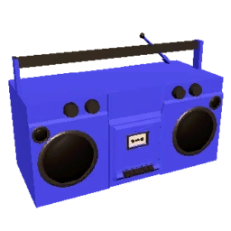
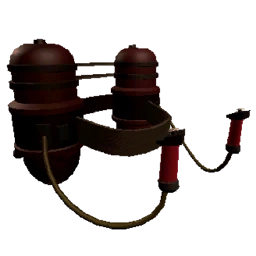
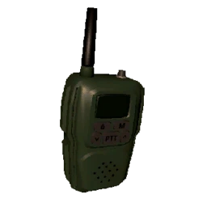

The Store is a game mechanic in Lethal Company that allows various items to be purchased.
Typing "store" into the Terminal will print a full list of the items available, including the current Profit Quota's rotation of ship decor and item sales.
An item may be purchased by typing in its name (or short-handed by typing at least the first three letters (i.e. "fla" for the Flashlight or "pro" for the Pro-flashlight) and a message will then appear asking to confirm or deny the order (you can also shorthand confirming/denying an order by using "c" or "d"). Multiples of a singular item may be purchased at once by typing a number after the name, though multiple different items cannot be purchased with one command.
Items will be shipped to the current Moon via the Delivery System; if ordering from Orbit, the shipment will wait until you land before the vehicle begins its descent. Multiple purchases made fast enough — or made before landing — will be batched into a singular shipment. Once the delivery vehicle lands, the items must be quickly retrieved from it before it takes off again; the rocket will leave regardless once 30 seconds has elapsed after it lands, and the Company does not refund incomplete deliveries.
Only one delivery vehicle may land at a time; if an order contains more than 12 items, or if there is a delay between multiple purchases, the items will be split between multiple vehicles, with each one queued up to arrive shortly after the previous vehicle leaves.
| Name | Image | Type | Price | Weight | Conductive | Battery | Info |
|---|---|---|---|---|---|---|---|
| Boombox |  | Gear | 60 | 16 | No | Yes | These jamming tunes are great for a morale boost on your crew! |
| Extension Ladder |  |
Gear | 60 | 0 | Yes | No | The extension ladder can reach as high as nine meters! Use it to scale any cliff and reach for the stars! To save batteries the extension ladder automatically stores itself after 18 seconds. |
| Flashlight |  |
Gear | 15 | 0 | No | Yes | The most affordable light source. It's even waterproof! |
| Jetpack |  | Gear | 700 | 52 | No | Yes | This device will get you around anywhere! Just use it responsibly! |
| Lockpicker | Gear | 20 | 16 | No | No | Lock-pickers will unlock your limitless potential for efficiency on the job. Powered by proprietary AI software, they will get you access through any locked door. | |
| Pro-flashlight |  |
Gear | 25 | 5 | No | Yes | The pro-flashlight is a slightly more expensive, slightly heavier, but overall superior version of the Flashlight. It has a wider cone of light, a longer range, and is much brighter. In addition, it has over double the battery capacity. |
| Radar Booster | Gear | 60 | 19 | Yes | No |
Radar boosters come with many uses! Use the "SWITCH" command before the radar booster's name to view it on the main monitor. It must be activated. Use the "PING" command before the radar booster's name to play a special sound from the device. Use the "FLASH" command before the radar booster's name to have a "flashbang" effect to both entities and employees. |
|
| Shovel |  |
Weapon | 30 | 8 | Yes | No | The shovel is primarily used to eliminate many creatures but is also capable of harming teammates. It has the lowest weight of any offensive melee weapon, making it a viable option for self-defense. The shovel deals 30 damage to employees. Different entities have their own "Shovel HP". |
| Spray Paint |  |
Gear | 50 | 0 | No | No | The Spray Paint can be used just for fun to make art or otherwise mess around with. It can also be used practically, such as to mark dead ends and the way back to prevent getting lost. |
| Stun grenade |
 Click me!!!
Click me!!!
|
Weapon | 30 | 5 | No | No | A non-lethal explosive that will stun most creatures for 5 seconds. Once the pin is removed, the grenade will detonate after 3 seconds. |
| TZP-Inhalant | Gear | 120 | 0 | Yes | No | This safe and legal medicine can be administered to see great benefits to your performance on the job! Your ability to move LONG distances while carrying HEFTY objects will be second to none! Warning: TZP gas may impact the brain with extended exposure. Follow instructions manual provided with the canister. Don't forget to share! | |
| Walkie-talkie |  | Gear | 12 | 0 | No | Yes | Useful for keeping in touch! Hear other players when the walkie talkie is in your inventory. Must be in your hand and pressed down to transmit voice. |
| Zap gun | Weapon | 400 | 11 | Yes | Yes |
The most specialized self-protective equipment, capable of sending upwards of 80,000 volts! To keep it targeted as long as possible, pull the gun side-to-side to counter the bend and fight against the pull of the electric beam. It can only stun for as long as you keep the current flowing. |
Ship upgrades add extra functions to your ship.
When purchased, the respective upgrade will remain available to use in the ship until a game over.
| Name | Image | Price | Info |
|---|---|---|---|
| Teleporter | 375 | Press the button to activate the teleporter. It will teleport whoever is currently being monitored on the ship's radar. They will not be able to keep any of their held items through the teleport. It takes about ten seconds to recharge. | |
| Inverse Teleporter | 425 |
The inverse teleporter is a modified teleporter which will teleport you to a random position outside the ship. All your items will be dropped at the teleporter before transport. The inverse teleporter can be used by everyone at once and has a 3.5 minute cooldown. DISCLAIMER: The inverse teleporter can only transport you in, not out, and you may become trapped. The Company is not responsible for injury or replacement of heads and limbs induced by quantum entanglement and bad luck. |
|
| Loud horn | 100 | Used to communicate with any crew member from any distance, no walkie talkie required! The horn can be heard from anywhere. But what does it mean? That's up to you! | |
| Signal Translator | 255 | Able to transmit messages to other crew members. Limited to 9 characters. |